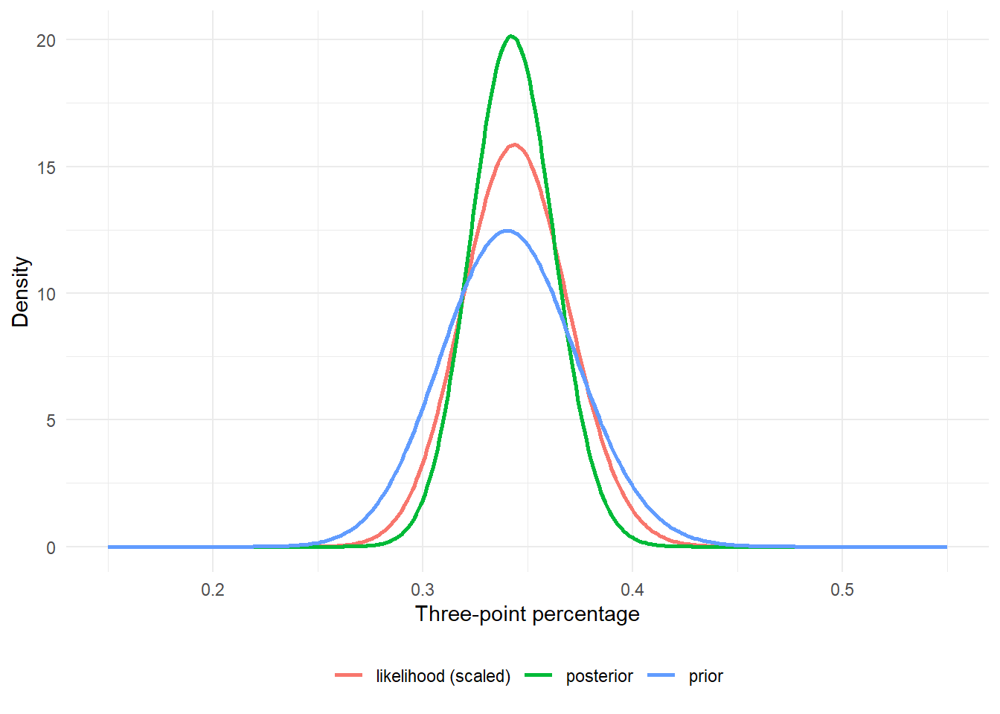
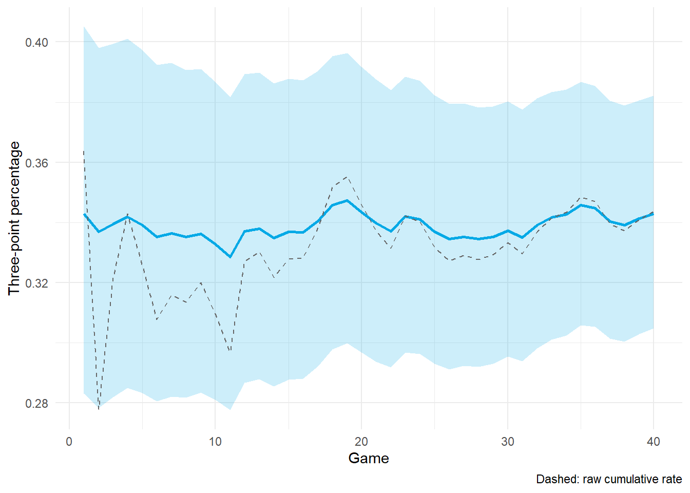

4.4 Bayesian Thinking and the Multilevel Connection
Author
Hua Gong
1 Learning objectives
After this tutorial, you should be able to:
state Bayes’ rule for a parameter and interpret a posterior as updated belief;
update a beta prior with binomial data, summarize the posterior, and update sequentially;
compute a posterior predictive probability for a future outcome;
derive the normal-normal posterior and show that its mean is the multilevel shrinkage estimate;
estimate prior hyperparameters from a population of players (empirical Bayes);
explain how a fully Bayesian multilevel model differs from the empirical Bayes interpretation of lme4 group estimates; and
explain how Gibbs updates average the shrinkage calculation over uncertain population parameters.
2 Two meanings of probability
A frequentist probability is a long-run frequency: the fraction of times an event would occur under repeated sampling. A Bayesian probability is a degree of belief about any uncertain quantity, including a parameter such as a player’s true shooting percentage. The rules of probability are the same; the difference is what we are willing to assign a probability to.
Bayes’ rule for a parameter and data is
The denominator does not depend on ; it rescales the product to integrate to one. Everything we learn from data is contained in the posterior .
Let be the probability that a three-point attempt is made. Over attempts with makes, the likelihood is binomial:
A convenient prior is the beta distribution,
Multiplying prior and likelihood gives another beta distribution:
The prior and posterior belong to the same family; the beta is conjugate to the binomial. The hyperparameters act like a prior sample of makes and misses, and the posterior mean is a weighted average of the prior mean and the observed rate:
makes attempts rate
122.000000 355.000000 0.343662
3.2 Choosing a prior from the league
A flat prior says every percentage from 0 to 1 is equally plausible before seeing data. Nobody believes that about a WNBA player. A better prior comes from the league: the distribution of three-point percentages across players is the natural population for .
The function fit_beta_binomial() estimates and by marginal maximum likelihood, integrating each player’s own out of the binomial likelihood. This is an empirical Bayes step, and it produces a prior whose spread matches the real spread of shooters rather than a guess.
league <- wnba$league_three %>%filter(athlete_display_name !="Caitlin Clark")prior <-fit_beta_binomial(league$fg3m, league$fg3a)prior
The prior says a typical shooter makes about a third of their threes, and the prior “sample size” tells how strongly the league pulls a player toward that value.
NoteRetrospective empirical Bayes example
The prior above uses other players’ full 2024 seasons and a minimum-attempt eligibility filter. Leaving Clark out avoids reusing her outcomes in that fit, but it does not make the prior available before her first game. The sequential plot below is a retrospective illustration. A prospective forecast would estimate the population prior from earlier information and examine how eligibility affects that population.
3.3 Prior, likelihood, posterior
posterior <-beta_binomial_update(prior[["a"]], prior[["b"]], season_makes, season_attempts)theta <-seq(0.15, 0.55, by =0.001)likelihood <-dbinom(season_makes, season_attempts, theta)curves <-bind_rows(data.frame(theta, density =dbeta(theta, prior[["a"]], prior[["b"]]), curve ="prior"),data.frame(theta, density = likelihood /sum(likelihood) /0.001, curve ="likelihood (scaled)"),data.frame(theta, density =dbeta(theta, posterior[["a"]], posterior[["b"]]), curve ="posterior"))ggplot(curves, aes(theta, density, color = curve)) +geom_line(linewidth =1) +labs(x ="Three-point percentage", y ="Density", color =NULL) +theme_minimal() +theme(legend.position ="bottom")

League prior, scaled likelihood from Caitlin Clark’s season, and the posterior.
The 95% credible interval is the range of values holding 95% of the posterior probability. It is a statement about the parameter, which is what people usually want a confidence interval to be but which a confidence interval is not.
3.4 Sequential updating
Because the posterior after one game is the prior for the next, we can process the season game by game. The final posterior is the same regardless of the order or grouping of the updates.
running <- clark %>%mutate(cumulative_makes =cumsum(fg3m),cumulative_attempts =cumsum(fg3a),a = prior[["a"]] + cumulative_makes,b = prior[["b"]] + cumulative_attempts - cumulative_makes,mean = a / (a + b),lower =qbeta(0.025, a, b),upper =qbeta(0.975, a, b),raw_rate = cumulative_makes / cumulative_attempts )ggplot(running, aes(game)) +geom_ribbon(aes(ymin = lower, ymax = upper), fill ="#03a9e6", alpha =0.2) +geom_line(aes(y = mean), color ="#03a9e6", linewidth =1) +geom_line(aes(y = raw_rate), color ="gray40", linetype ="dashed") +labs(x ="Game", y ="Three-point percentage", caption ="Dashed: raw cumulative rate") +theme_minimal()

Posterior mean and 95% credible interval for Caitlin Clark’s three-point percentage after each game.
The raw rate swings in the first weeks; the posterior mean starts at the prior and moves only as far as the evidence justifies.
3.5 Posterior predictive probability
What is the probability that she makes at least 5 of her next 10 attempts? The answer integrates the binomial over the posterior for , which for a beta posterior is the beta-binomial distribution:
with , , and future attempts.
beta_binomial_pmf <-function(k, m, a, b) {exp(lchoose(m, k) +lbeta(k + a, m - k + b) -lbeta(a, b))}future <-0:10predictive <-beta_binomial_pmf(future, 10, posterior[["a"]], posterior[["b"]])plug_in <-dbinom(future, 10, posterior[["a"]] /sum(posterior))data.frame(quantity =c("P(at least 5 of 10), posterior predictive", "P(at least 5 of 10), plug-in"),probability =c(sum(predictive[future >=5]), sum(plug_in[future >=5]))) %>% knitr::kable(digits =3)
quantity
probability
P(at least 5 of 10), posterior predictive
0.235
P(at least 5 of 10), plug-in
0.233
The posterior predictive is slightly more spread out than the plug-in binomial because it also carries uncertainty about .
4 Normal-normal: a passer’s EPA
For a continuous statistic, the conjugate pair is normal prior and normal likelihood. Let be passer ’s mean EPA over attempts.
Here is the player’s mean EPA, is the population mean, is between-player variance, and is within-player variance. Throughout this tutorial, denotes a normal distribution with mean and variance . The following update conditions on known .
Completing the square in the exponent gives a normal posterior,
Precisions add, and the posterior mean is a precision-weighted average of the prior mean and the data. Rearranging,
This is the shrinkage estimator of Tutorial 4.2 with . The multilevel BLUP is the posterior mean of a normal-normal model.
qb_epa <- passes %>%group_by(passer) %>%summarize(attempts =n(), epa_mean =mean(qb_epa), .groups ="drop")# Hyperparameters from the population: the REML estimates of Tutorial 4.2epa_fit <-lmer(qb_epa ~1+ (1| passer), data = passes)variance_components <-as.data.frame(VarCorr(epa_fit))sigma2 <- variance_components$vcov[variance_components$grp =="Residual"]tau2 <- variance_components$vcov[variance_components$grp =="passer"]mu <-fixef(epa_fit)[["(Intercept)"]]c(mu = mu, tau =sqrt(tau2), sigma =sqrt(sigma2))
The posterior standard deviation is , the same conditional standard deviation lme4 reports with condVar = TRUE for this Gaussian random-intercept model, holding fitted population parameters fixed. These are plug-in empirical Bayes summaries, not a fully Bayesian posterior.
5 Where do the hyperparameters come from?
The prior has its own parameters, and there are three ways to handle them.
Approach
Treatment of
Software
Consequence
Subjective prior
Fixed from outside knowledge
Any
Results depend on the choice
Empirical Bayes
Estimated from the data by ML or REML, then treated as known
lme4
Gaussian group modes equal means; plug-in uncertainty omits hyperparameter uncertainty
Fully Bayesian
Given their own priors and integrated over
Stan, rstanarm, brms
Uncertainty in propagates to every player
A model fitted by lme4 has an empirical Bayes interpretation for its group effects. In a Gaussian linear mixed model, the conditional modes equal the conditional means. In a generalized linear mixed model, ranef() returns conditional modes, which generally differ from posterior means. The model structure alone does not determine whether the fitting method is frequentist or Bayesian.
5.1 Averaging over population uncertainty
Let denote all observed EPA values and let collect the population parameters. Full Bayes averages the conditional player posterior over the posterior for :
At each posterior draw, the shrinkage weight changes with the sampled population parameters. The law of total variance makes the extra source of uncertainty explicit:
The first term averages conditional uncertainty. The second measures how conditional means vary across population-parameter draws. This includes uncertainty that a plug-in analysis omits. It does not guarantee that every full Bayesian interval is wider than its empirical Bayes counterpart, because the priors and fitted distributions also differ.
6 The dictionary between the two languages
Multilevel model (lme4)
Bayesian hierarchical model
fixed effect
parameter with a weak prior
random effect
parameter with a hierarchical prior
variance component
hyperparameter
BLUP
posterior mean of given
conditional variance of
posterior variance of given
ML or REML estimate of
ML maximizes marginal likelihood, REML maximizes a restricted likelihood
parametric bootstrap: simulate repeated datasets and refit
posterior sampling: simulate parameters conditional on the observed dataset
The complete hierarchical model for EPA is
Here indexes quarterbacks and indexes attempts. is EPA on an attempt; lowercase denotes its observed value. Observations and player effects are conditionally independent at their respective levels.
Define by density proportional to for . Equivalently, . The variance priors above have means 0.04 and 4. They give convenient conjugate Gibbs updates and match the teaching model in Tutorial 4.7. They are explicit teaching assumptions, not universal default priors. Tutorial 4.5 uses a different likelihood and an exponential prior on the player standard deviation.
The posterior includes all player means and all unknown population parameters. Full Bayes requires priors for the population mean and residual variance as well as the player variance.
7 Gibbs sampling: repeating the shrinkage update
Markov chain Monte Carlo (MCMC) produces a sequence of dependent draws whose stationary distribution is the posterior. After allowing the chain to settle and checking its behavior, we use retained draws to estimate posterior quantities. Finite chains give numerical approximations, even when each update draws exactly from a known distribution.
Gibbs sampling is an MCMC method that repeatedly draws from each parameter’s full conditional: its distribution given the observed data and all other current parameter values. For the Gaussian hierarchy above, one iteration is:
Draw each using the normal-normal shrinkage update with the current .
Draw conditional on the current player means and player variance.
Draw conditional on the current player means and population mean.
Draw conditional on the current player means and observed EPA values.
Each iteration revises both player estimates and the population distribution. Pooling strength therefore changes across draws. Integrating population uncertainty is the statistical goal; Gibbs sampling is one way to compute it.
NoteShow the full conditional distributions and R implementation
Let be the total attempts and the player average. The symbol means conditional on the data and all other current parameters. Define conditional variances and means by
The updates are
The player update repeats the familiar shrinkage rule. The term 1 in the population-mean precision comes from the prior. The inverse-gamma updates use R’s gamma rate, not its scale.
The function uses the sufficient statistics n, sy, sy2, and raw: attempt count, sum of EPA, sum of squared EPA, and mean EPA. Its output stores standard deviations tau and sigma, although its internal updates sample variances.
This illustration uses only games through Week 10. Four chains support computational checks. Tutorial 4.5 explains the diagnostics; Tutorial 4.7 develops the Gaussian Gibbs workflow and prior sensitivity in more detail.
Gibbs is convenient here because the chosen Gaussian and inverse-gamma distributions give recognizable full conditionals. The logistic completion model does not have these same conjugate updates. Stan uses Hamiltonian Monte Carlo (HMC), usually through the No-U-Turn Sampler (NUTS), rather than this Gibbs algorithm. Both methods aim to represent the joint posterior. Stan sampling documentation
8 Practice
With prior , a shooter makes 40 of 100. What is the posterior mean, and how much weight did the prior receive?
Why is the posterior after 40 games the same whether the games are processed one at a time or all at once?
Show that as the normal-normal posterior mean equals the sample mean, and as it equals .
Why does a Gibbs iteration update population parameters as well as player means?
In what situation would empirical Bayes and full Bayes disagree most?
9 Key takeaways
A posterior is prior times likelihood, renormalized; conjugate pairs make the update a formula.
The beta-binomial posterior mean weights the prior mean and observed rate by their effective sample sizes.
The normal-normal posterior mean is the multilevel shrinkage estimate, and its variance is the conditional variance of the BLUP.
lme4 fits by ML or REML; its conditional player estimates have a plug-in empirical Bayes interpretation.
A fully Bayesian model adds priors on the variance parameters and integrates over them, so uncertainty in the population distribution contributes to inference.
Gibbs sampling repeats conditional updates and averages over unknown population parameters. Stan uses HMC/NUTS to sample more general models.